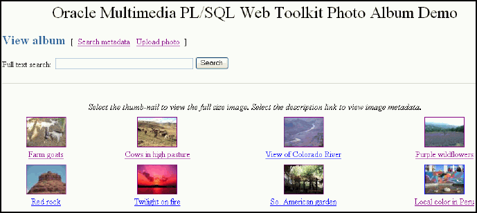
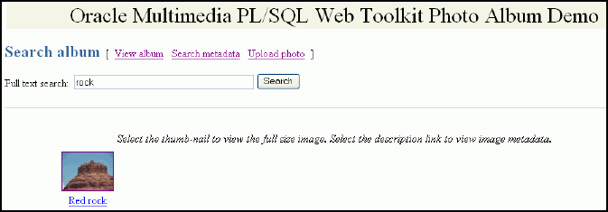
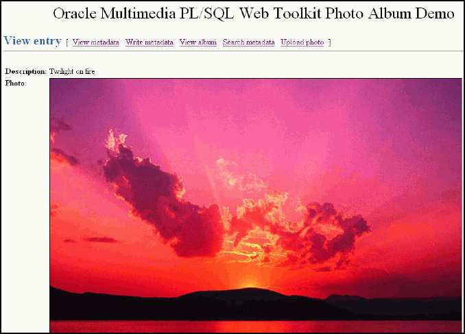
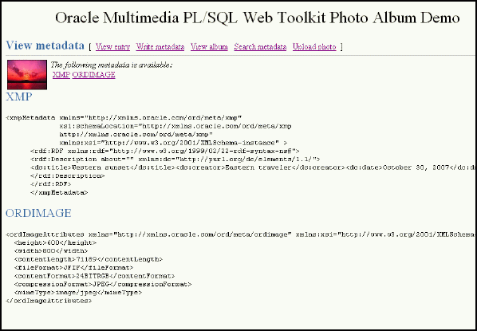
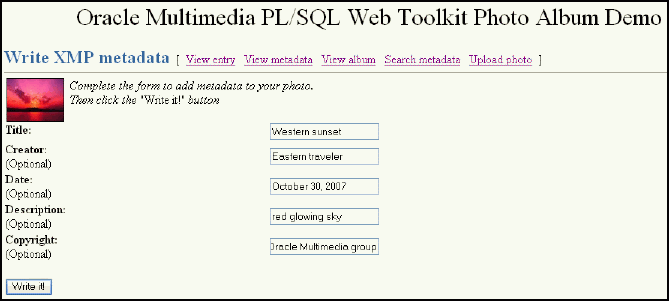
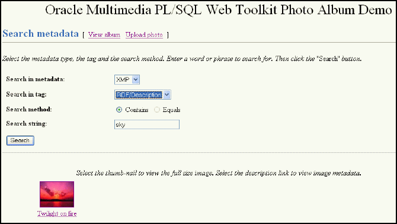

3 Oracle Multimedia PL/SQL Photo Album Sample Application
The Oracle Multimedia PL/SQL Web Toolkit Photo Album sample application is a media upload and retrieval Web application using Oracle Multimedia object types. This application uses the PL/SQL Gateway and PL/SQL Web Toolkit.
This application assumes the following:
-
You are familiar with developing PL/SQL applications using the PL/SQL Gateway and PL/SQL Web Toolkit.
-
You have installed and configured the Oracle Multimedia PL/SQL Web Toolkit Photo Album sample application.
You can install the Oracle Multimedia PL/SQL Web Toolkit Photo Album sample application from the Oracle Database Examples media, which is available for download from the Oracle Technology Network (OTN). After installing the Oracle Database Examples media, the sample application files and README.txt file are located at:
<ORACLE_HOME>/ord/http/demo/plsqlwtk (on Linux and UNIX)
<ORACLE_HOME>\ord\http\demo\plsqlwtk (on Windows)
This chapter describes how to run the PL/SQL Web Toolkit Photo Album sample application. See the README.txt file for this sample application for additional requirements and instructions on installing and configuring this sample application.
This chapter includes these sections:
See Also:
Oracle Multimedia Code Wizard Sample Application for the PL/SQL Gateway for a sample application that creates media upload and retrieval procedures for the PL/SQL Gateway
3.1 Overview of the PL/SQL Photo Album Sample Application
This topic describes the setup process for the Oracle Multimedia PL/SQL Web Toolkit Photo Album sample application.
The Oracle Multimedia PL/SQL Web Toolkit Photo Album sample application demonstrates how to perform the following operations:
-
Use the Oracle Multimedia image object type to upload, retrieve, and process media data stored in Oracle Database.
-
Combine the image metadata methods of Oracle Multimedia with the XML document management capabilities of Oracle XML DB and the full-text indexing and search features of Oracle Text to create a solution that can extract, store, and search metadata that is embedded in binary image files.
-
Collect new metadata from a user, format the metadata into an XML document, and store the document in the binary image using the Oracle Multimedia image object type.
When installed, this photo album application creates several schema objects that are important to the following discussion. These objects include the photos table, which is defined by the following CREATE TABLE statement:
CREATE TABLE photos( id NUMBER PRIMARY KEY,
description VARCHAR2(40) NOT NULL,
metaORDImage XMLTYPE,
metaEXIF XMLTYPE,
metaIPTC XMLTYPE,
metaXMP XMLTYPE,
image ORDSYS.ORDIMAGE,
thumb ORDSYS.ORDIMAGE )
--
-- store full-size and thumbnail images as SecureFiles LOBS
--
LOB(image.source.localdata) STORE AS SECUREFILE
LOB(thumb.source.localdata) STORE AS SECUREFILE
--
-- and bind the XMLType columns to the Oracle Multimedia metadata schemas
XMLType COLUMN metaORDImage
STORE AS SecureFile CLOB
XMLSCHEMA "http://xmlns.oracle.com/ord/meta/ordimage"
ELEMENT "ordImageAttributes"
XMLType COLUMN metaEXIF
STORE AS SecureFile CLOB
XMLSCHEMA "http://xmlns.oracle.com/ord/meta/exif"
ELEMENT "exifMetadata"
XMLType COLUMN metaIPTC
STORE AS SecureFile CLOB
XMLSCHEMA "http://xmlns.oracle.com/ord/meta/iptc"
ELEMENT "iptcMetadata"
XMLType COLUMN metaXMP
STORE AS SecureFile CLOB
XMLSCHEMA "http://xmlns.oracle.com/ord/meta/xmp"
ELEMENT "xmpMetadata";
The data types for the image and thumb columns are defined as Oracle Multimedia image object types. These columns are used to store the full-size images and the generated thumbnail images, respectively. The LOB storage clauses direct the database to store the full-size and thumbnail images in SecureFiles LOBs, which are the highest performing storage option for binary data.
The table also defines four columns of type XMLType to store XML documents that contain four different kinds of image metadata. Each column is bound to a specific Oracle Multimedia metadata schema. Each metadata schema defines precisely the data model of the metadata document. These schemas are registered with Oracle XML DB when the database is created. The column definitions specify that the database uses unstructured storage to manage the XML metadata documents. Some advantages of using unstructured storage to manage XML include fast retrieval of the complete document and the ability to use XMLIndex indexes to improve the performance of XPath-based queries.
When installed, this photo album application also creates other schema objects. These schema objects include two types of indexes that accelerate metadata searches: a CONTEXT text index and an XMLIndex index.
The CONTEXT type is a text index over all columns that contain descriptive information about the image. These columns include PHOTOS.DESCRIPTION, which is a VARCHAR2 data type, and these four XMLType columns: PHOTOS.METAIPTC, PHOTOS.METAEXIF, PHOTOS.METAXMP, and PHOTOS.METAORDIMAGE. The CONTEXT text index is used to accelerate metadata searches by implementing the photo album search feature that enables users to search for photographs by keyword or phrase.
The CONTEXT text index is created by the following statements. (This example assumes that this photo album application has been installed in the SCOTT schema.)
-- Create preference PA_CTXIDX.
ctx_ddl.create_preference('SCOTT.PA_CTXIDX', 'MULTI_COLUMN_DATASTORE');
-- Create a multicolumn datastore.
ctxcols := 'description, ' ||
'SCOTT.photo_album.getClob(METAIPTC), ' ||
'SCOTT.photo_album.getClob(METAEXIF), ' ||
'SCOTT.photo_album.getClob(METAXMP), ' ||
'SCOTT.photo_album.getClob(METAORDIMAGE)';
ctx_ddl.set_attribute( ctxpref, 'COLUMNS', ctxcols );
-- Create the CONTEXT text index.
create index pa_ctx_idx on photos(description)
indextype is ctxsys.context
parameters ( 'DATASTORE SCOTT.PA_CTXIDX' );
The XMLIndex index is used to accelerate metadata searches by permitting users to search only certain types of image metadata and limiting the search to specific portions of an XML document. For example, the following statements create three indexes of type XMLIndex to speed up existsNode( ) queries on columns of type XMLType:
create index pa_path_iptc_idx on photos( metaIptc ) indextype is XDB.XMLIndex; create index pa_path_exif_idx on photos( metaExif ) indextype is XDB.XMLIndex; create index pa_path_xmp_idx on photos( metaXMP ) indextype is XDB.XMLIndex;
During the installation, as prescribed by the PL/SQL Gateway, a document upload table is defined by the following CREATE TABLE statement:
CREATE TABLE PHOTOS_UPLOAD( name VARCHAR2(256) UNIQUE NOT NULL,
mime_type VARCHAR2(128),
doc_size NUMBER,
dad_charset VARCHAR2(128),
last_updated DATE,
content_type VARCHAR2(128),
blob_content BLOB )
--
-- store BLOBs as SecureFiles LOBs
--
LOB(blob_content) STORE AS SECUREFILE;
Each image uploaded using the PL/SQL Gateway is stored in the PHOTOS_UPLOAD table. An upload procedure (insert_new_photo) automatically moves the uploaded image from the specified PHOTOS_UPLOAD table to the photo album applications table called photos.
See Also:
-
Oracle XML DB Developer's Guide for more information about XML DB and
XMLIndexindexes -
Oracle Text Application Developer's Guide for more information about creating and using text indexing
3.2 Running the PL/SQL Photo Album Sample Application
This topic describes how to run the PL/SQL Photo Album application.
After you have completed the setup tasks and have built the PL/SQL Photo Album application, including creating a database access descriptor (DAD) entry (as described in the README.txt file), you are ready to run this application.
In the address field of your Web browser, enter the following URL:
<protocol><hostname:port-number>/photoalbum
- In the
<protocol>field, enterhttp://. - In the
<hostname:port-number>field, enter the host name and port number of the system where your HTTP server is running.
When first invoked, this photo album application displays any images that are currently stored in the album. By default, the photo album is empty when first installed. To upload a new photograph, select Upload photo. Enter a description of the photograph and the name of the image file, or browse to its directory location. Then, click Upload photo.
The contents of the photo album are displayed, along with a picture of the new photograph. Click the thumbnail image to view the full-size version of the photograph. When this photo album application displays the text view image instead of its thumbnail image, the image format that was uploaded was not recognized by Oracle Multimedia. Click view image to display the full-size image.
You can now begin to load your photo album application with your favorite photographs.
3.3 Description of the PL/SQL Photo Album Sample Application
The PL/SQL Photo Album application is implemented as a set of PL/SQL procedures and functions, organized in a single PL/SQL package.
These PL/SQL procedures and functions combine several database features to create the application. Oracle Multimedia is used to store and process image data. It is also used to extract metadata from images and embed new metadata into images. The XMLType feature is used to store and process the XML metadata documents. Oracle Text indexes are used to accelerate two kinds of metadata searches. Finally, the PL/SQL Web Toolkit is used to create HTML pages and deliver media content.
The user interface for the PL/SQL Photo Album application consists of a set of Web pages. You can use these Web pages to perform a set of tasks. The tasks and the Web pages are introduced in this topic and described in further detail in the following sections.
You can explore this photo album application using the navigation bar near the top of each Web task page. The leftmost entry of the navigation bar displays the name of the current Web page. On the right, there are links to other Web pages you can access from the current page. Each Web task page contains a link to the View album page, which is the home page for the application.
Pages in the PL/SQL Photo Album Sample Application
The following topics, which are summarized here, describe each page in the PL/SQL Photo Album application:
-
Use the View album page to display thumbnail-size versions of all the images in the photo album and a description link positioned under each thumbnail image. When you select a thumbnail image, the full-size image is displayed. When you select the description link for an image, all the metadata for that image is displayed. The View album page is the home page for the application.
-
Adding Images to the Photo Album
Use the Upload photo page to display a simple form to collect a description for a new image, and the directory path to the location of the image on the local computer. When you click the Upload photo button, the browser sends the image to the Web server and the image is stored in the database.
-
Searching for Images by Keyword or Phrase
Use the Search album page to display a search album form to collect keywords or phrases to initiate full-text searches through all image metadata. The application queries the database for all images with metadata that contains the specified keywords or phrases. The search results are displayed as a set of thumbnail images. The search album form is also available from the View album page.
-
Use the View entry page to display the full-size image of a specified photograph, including any description text that was entered for that image when it was uploaded.
-
Use the View metadata page to display all the metadata that was extracted from the image when it was uploaded. Up to four types of metadata can be displayed.
-
Writing New XMP Metadata to Images
Use the Write XMP metadata page to display a form to collect input for five metadata attributes. These attributes are formatted into an XML document that is embedded within the binary image. The new XMP metadata overwrites any existing XMP metadata.
-
Searching for Images That Contain Specific Metadata Attributes
Use the Search metadata page to collect input and perform advanced metadata searches. You can specify the type of metadata to be searched. Optionally, you can also limit the search to a specific XML tag within the specified document. The search results are displayed as a set of thumbnail images.
See Also:
-
Oracle XML DB Developer's Guide for more information about querying and updating XML metadata
-
Oracle Text Application Developer's Guide for more information about text indexing
-
Oracle Database Advanced Application Developer's Guide for more information about developing PL/SQL Web applications
3.3.1 Browsing the Photo Album
You can use the View album page of the photo album application to browse the contents of a photo album and to access other photo album capabilities.
The home page for this photo album application, View album, displays the contents of the photo album as thumbnail images in four-column format. Each thumbnail image is also a link to the View entry page. When you click a thumbnail image link, the application displays the full-size image on a View entry page. Included under each thumbnail image on the View album page is the image description that was entered when the image was uploaded to the album. The description is also a link to the View metadata page where all the metadata for this photograph can be examined.
Near the top of the View album page, there is a text entry field (in the shape of a rectangular box) that accepts user input for a full-text search through all the photo album metadata. The Search button to the right of the text field initiates the search. The search results are displayed on the Search album page.
At the top of the View album page, there is a navigation bar, which includes links to other photo album pages. From the View album page, you can navigate to the Search metadata page or the Upload photo page.
Figure 3-1 shows the View album page for an album that contains several images.
Figure 3-1 View album Page with Uploaded Images
Description of "Figure 3-1 View album Page with Uploaded Images"
The PL/SQL procedures view_album, print_album, print_image_link, and deliver_media are the primary application components that implement the View album page. The view_album procedure is a public procedure that takes a single optional argument. By default, the argument has a NULL value. Or, it can have the value of the string entered in the text entry field on the Search album page. When the search argument is NULL, the SELECT statement retrieves the id,description, and thumb columns for all entries in the photos table. When the search string is not NULL, the SELECT statement uses the CONTAINS operator to restrict the result set to only images with metadata that matches the search string.
Example 3-1 contains some relevant lines of code in the view_album procedure.
The SELECT statement is bound to the cursor variable album_cur and passed to the procedure print_album, which creates the HTML output.
The print_album procedure uses the HTP and HTF packages from the PL/SQL Web Toolkit to create the HTML tags that format the output into a four-column table. Each cell in the table contains two links or anchor tags. The first link is to the View entry page, which displays the full-size version of the image. This anchor is implemented by PHOTO_ALBUM.VIEW_ENTRY, and passes entry_id as a query string input argument. If the thumbnail image has a nonzero length, then procedure print_image_link is called to create an HTML <img> tag that is the content (the thumbnail image) of the anchor link. The string thumb and the entry_id are passed to procedure print_image_link, along with the image description, and the height and width of the thumbnail image. These values are used to create the <img> tag.
If an image is in a format that Oracle Multimedia does not support, the application cannot create a thumbnail version of the image. In this case, the content of the anchor link is the text view image.
Example 3-2 contains some relevant lines of code in the print_album procedure.
The procedure print_image_link uses the height and width arguments to populate the height and width attributes of the <img> tag. The description argument is used to create text for the alt attribute. If the description argument is empty, a default string is constructed. Finally, the src attribute is set to the URL PHOTO_ALBUM.DELIVER_MEDIA with two query string arguments, media and entry_id. The media argument controls whether the thumbnail or full-size version of the image is delivered. The entry_id argument identifies the image to be delivered.
Example 3-3 contains some relevant lines of code in the print_image_link procedure.
The procedure deliver_media fetches the image content from the database. The If-Modified-Since HTTP request header is compared to the last modification time of the image. If the image has not been modified, a response is sent that the browser can display the image from its cache. Otherwise, the image MIME type and last modified time are sent to the Web server, along with the image content.
Example 3-4 contains some relevant lines of code in the deliver_media procedure.
Example 3-1 Procedure view_album
--
-- no search criteria so fetch all entries
--
IF search IS NULL THEN
OPEN album_cur FOR
SELECT id, description, thumb
FROM photos
ORDER BY id;
print_album( album_cur, 'The photo album is empty.' );
CLOSE album_cur;
ELSE
-- -- use the full-text index to select entries matching the search criteria
--
OPEN album_cur FOR
SELECT id, description, thumb
FROM photos
WHERE CONTAINS( description, trim(search) ) > 0
ORDER BY id;
print_album( album_cur, 'No photos were found.' );
CLOSE album_cur;
END IF;
Example 3-2 Procedure print_album
-- escape the description text
sc_description := htf.escape_sc( entry.description );
--
-- Display the thumbnail image as an anchor tag which can be used
-- to display the full-size image. If the image format is not
-- supported by Oracle Multimedia, then a thumbnail would not have been
-- produced when the image was uploaded, so use the text '[view
-- image]' instead of the thumbnail.
--
htp.print( '<td headers="c' || colIdx || '" align="center" >
<a href="PHOTO_ALBUM.VIEW_ENTRY?entry_id=' ||
entry.id || '">' );
IF entry.thumb.contentLength > 0
THEN
print_image_link( 'thumb', entry.id, sc_description,
entry.thumb.height, entry.thumb.width );
ELSE
htp.prn( '[view image]' );
END IF;
htp.print( '</a>' );
-- Create link to the metadata
htp.prn('<br>');
htp.anchor( curl=>'PHOTO_ALBUM.VIEW_METADATA?entry_id=' || entry.id,
ctext=>sc_description );
htp.prn('</td>');
Example 3-3 Procedure print_image_link
-- add height and width to tag if non zero
IF height > 0 AND width > 0 THEN
attributes := attributes || ' height=' || height || ' width=' || width;
END IF;
-- create an alt text if none given
IF alt IS NULL THEN
IF type = 'thumb' THEN
alt2 := 'thumb-nail image ';
ELSE
alt2 := 'full-size image ';
END IF;
alt2 := alt2 || 'for album entry ' || entry_id;
ELSE
alt2 := alt;
END IF;
htp.img( curl=>'PHOTO_ALBUM.DELIVER_MEDIA?media=' || type ||
ampersand || 'entry_id=' || entry_id,
calt=>alt2, cattributes=>attributes );
Example 3-4 Procedure deliver_media
--
-- Fetch the thumbnail or full-size image from the database.
--
IF media = 'thumb'
THEN
SELECT thumb INTO local_image FROM photos WHERE id = entry_id;
ELSE
SELECT image INTO local_image FROM photos WHERE id = entry_id;
END IF;
--
-- Check update time if browser sent If-Modified-Since header
--
IF ordplsgwyutil.cache_is_valid( local_image.getUpdateTime() )
THEN
owa_util.status_line( ordplsgwyutil.http_status_not_modified );
RETURN;
END IF;
--
-- Set the MIME type and deliver the image to the browser.
--
owa_util.mime_header( local_image.mimeType, FALSE );
ordplsgwyutil.set_last_modified( local_image.getUpdateTime() );
owa_util.http_header_close();
IF owa_util.get_cgi_env( 'REQUEST_METHOD' ) <> 'HEAD' THEN
wpg_docload.download_file( local_image.source.localData );
END IF; Related Topics
3.3.2 Adding Images to the Photo Album
You can use the Upload photo page of the photo album application to add more content to a photo album.
The Upload photo page is used to add new images to the photo album. The page displays a form with two text entry fields. In the Description: field, you can optionally enter a word or short phrase that describes the image. In the File name: field, enter the name of the image file or click Browse... to locate the image file to be uploaded. The Upload photo button under the File name: field starts the upload operation. When the image is successfully uploaded, the View album page appears. From that page, you can display the contents of the photo album.
At the top of the Upload photo page, there is a navigation bar, which includes links to other photo album pages. From the Upload photo page, you can return to the View album page or select the Search metadata page.
Figure 3-2 shows an Upload photo page with all the entry fields completed.
The PL/SQL procedures view_upload_form, print_upload_form, and insert_new_photo are the primary application components that implement the Upload photo page. Together, view_upload_form and print_upload_form create the HTML page that is displayed. The page contains a form tag, a portion of which is shown in Example 3-5. The target of the form is PHOTO_ALBUM.INSERT_NEW_PHOTO.
Example 3-5 contains some relevant lines of code in the print_upload_form procedure.
Procedure insert_new_photo receives the form, processes the inputs, and stores the new image in the database.
First, the insert_new_photo procedure checks that a file name was entered into the upload form. The image size, MIME type, and BLOB locator for the image content are selected from the document upload table, and the size is checked to ensure that the image is not of zero length. If the description field is blank, a description is created using the file name.
Next, the ORDSYS.ORDIMAGE( ) constructor is called to initialize the thumb and image ORDImage object type columns with an empty BLOB for the new row to be stored in the photos table. A SQL SELECT FOR UPDATE statement fetches the newly initialized thumbnail image and full-size image object type columns for updating. A DBMS_LOB.COPY operation loads the image from the upload table into the image ORDImage object type column.
The ORDImage object method setProperties( ) reads the image and sets the image object attributes. Because some browsers cannot display some image formats inline, in this sample application, BMP formatted images are converted to a JPEG image format (for images with more than 8 bits of color), or a GIFF image format (for images with less than 9 bits of color) by calling the get_preferred_format function. A processCopy( ) operation is performed on the full-size image to create the thumbnail image.
The ORDImage object getMetadata( ) method is called to extract all supported types of image metadata. The root element of each XML document in the return vector is examined to discover the metadata type so that the documents can be stored in the correct columns.
Then, a SQL UPDATE statement stores the full-size image, the thumbnail image, and the image metadata documents in the database. Procedure sync_indexes is called to force an update of the text indexes. Finally, the form data input is deleted from the document upload table. A success message is returned to the browser, and the browser is redirected to the View album page.
Example 3-6 contains some relevant lines of code in the insert_new_photo procedure.
Example 3-5 Procedure print_upload_form
<form action="PHOTO_ALBUM.INSERT_NEW_PHOTO" method="post" enctype="multipart/form-data"> database.
Example 3-6 Procedure insert_new_photo
--
-- Make sure a file name has been provided. If not, display an error
-- message, then re-display the form.
--
IF new_photo IS NULL OR LENGTH( new_photo ) = 0
THEN
print_page_header;
print_error( 'Please supply a file name.' );
print_upload_form;
print_page_trailer( TRUE );
return;
END IF;
--
-- Get the length, MIME type and the BLOB of the new photo from the
-- upload table.
--
SELECT doc_size,
mime_type,
blob_content
INTO upload_size,
upload_mime_type,
upload_blob
FROM photos_upload
WHERE name = new_photo;
--
-- Make sure we have a valid file.
--
IF upload_size = 0
THEN
print_page_header;
print_heading( 'Error message' );
htp.print( '<hr size="-1"><p>Please supply a valid image file.</p>' );
print_upload_form;
print_page_trailer( TRUE );
return;
END IF;
--
-- If the description is blank, then use the file name.
--
IF c_description IS NULL
THEN
c_description := new_photo;
pos := INSTR( c_description, '/', -1 );
IF pos > 0
THEN
c_description := SUBSTR( c_description, pos + 1 );
END IF;
c_description := SUBSTR( 'Image from file: ' ||
c_description || '.', 1, 40 );
END IF;
--
-- Insert a new row into the table, returning the newly allocated sequence
-- number.
INSERT INTO photos ( id, description, metaExif, metaIPTC, metaXMP,
image, thumb )
VALUES ( photos_sequence.nextval, c_description, NULL, NULL, NULL,
ORDSYS.ORDIMAGE(), ORDSYS.ORDIMAGE() )
RETURN id
INTO new_id;
--
-- Fetch the newly initialized full-size and thumbnail image objects.
--
SELECT image,
thumb
INTO new_image,
new_thumb
FROM photos
WHERE id = new_id
FOR UPDATE;
--
-- Load the photo from the upload table into the image object.
--
DBMS_LOB.COPY( new_image.source.localData, upload_blob, upload_size );
new_image.setLocal();
--
-- Set the properties. If the image format is not recognized, then
-- the exception handler will set the MIME type and length from the
-- upload table.
--
BEGIN
new_image.setProperties();
EXCEPTION
WHEN OTHERS THEN
new_image.contentLength := upload_size;
new_image.mimeType := upload_mime_type;
END;
--
-- Some image formats are supported by Oracle Multimedia but cannot be
-- displayed inline by a browser. The BMP format is one example.
-- Convert the image to a GIF or JPEG based on number of colors in the
-- image.
--
IF new_image.contentFormat IS NOT NULL AND
( new_image.mimeType = 'image/bmp' OR
new_image.mimeType = 'image/x-bmp' )
THEN
BEGIN
new_image.process(
'fileFormat=' ||
get_preferred_format( new_image.contentFormat ) );
EXCEPTION
WHEN OTHERS THEN
NULL;
END;
END IF;
--
-- Try to copy the full-size image and process it to create the thumbnail.
-- This may not be possible if the image format is not recognized.
--
BEGIN
new_image.processCopy( thumb_scale, new_thumb );
EXCEPTION
WHEN OTHERS THEN
new_thumb.deleteContent();
new_thumb.contentLength := 0;
END;
--
-- fetch the metadata and sort the results
--
BEGIN
metav := new_image.getMetadata( 'ALL' );
FOR i IN 1..metav.count() LOOP
meta_root := metav(i).getRootElement();
CASE meta_root
WHEN 'ordImageAttributes' THEN xmlORD := metav(i);
WHEN 'xmpMetadata' THEN xmlXMP := metav(i);
WHEN 'iptcMetadata' THEN xmlIPTC := metav(i);
WHEN 'exifMetadata' THEN xmlEXIF := metav(i);
ELSE NULL;
END CASE;
END LOOP;
EXCEPTION
WHEN OTHERS THEN
NULL;
END;
--
-- Update the full-size and thumbnail images in the database.
-- Update metadata columns
--
UPDATE photos
SET image = new_image,
thumb = new_thumb,
metaORDImage = xmlORD,
metaEXIF = xmlEXIF,
metaIPTC = xmlIPTC,
metaXMP = xmlXMP
WHERE id = new_id;
-- -- update the text indexes
-- sync_indexes;
--
-- Delete the row from the upload table.
--
DELETE FROM photos_upload WHERE name = new_photo;
COMMIT;
--
-- Redirect browser to display full album.
-- print_page_header(
'<meta http-equiv="refresh" content="2;url=PHOTO_ALBUM.VIEW_ALBUM">' );
print_heading( 'Photo successfully uploaded into photo album' );3.3.3 Searching for Images by Keyword or Phrase
You can use the View album and Search album pages of the photo album application to search for content in a photo album.
You can use the View album and Search album pages to perform a keyword or phrase search of the metadata stored in the photo album. On either of these pages, enter the keyword or phrase in the Full text search: text entry field and click Search. This photo album application uses the CONTEXT text index to locate images that have metadata containing the text you entered. If the search is successful, the thumbnail versions of the matching images are displayed in a four-column table. Select the thumbnail image to view the full-size version, or select the description link below the thumbnail image to view the metadata for the image. If the search fails, the message "No photos were found" is displayed.
At the top of the Search album page, there is a navigation bar, which includes links to other photo album pages. From the Search album page, you can return to the View album page or select the Search metadata or Upload photo pages.
Figure 3-3 shows a Search album page that contains the results of a successful search operation.
Figure 3-3 Search album Page Showing Results
Description of "Figure 3-3 Search album Page Showing Results"
Full-text searching of the photo album is implemented by the view_album procedure.
Related Topics
3.3.4 Viewing Full-Size Images
You can use the View entry page of the photo album application to display full-size images and their descriptions in a photo album.
When you select a thumbnail image, the application directs you to the View entry page. This page displays the description of the image and the full-size version of the image.
At the top of the View entry page, there is a navigation bar, which includes links to other photo album pages. From the View entry page, you can return to the View album page, or select any of the View metadata, Write metadata, Search metadata, or Upload photo pages.
Figure 3-4 shows a View entry page that contains the description and the full-size version of an image.
Figure 3-4 View entry Page with a Full-Size Image
Description of "Figure 3-4 View entry Page with a Full-Size Image"
The PL/SQL procedures view_entry, print_image_link, and deliver_media are the primary application components that implement the View entry page. The procedure view_entry takes a single parameter, entry_id, which uniquely locates the image in the photos table. The description and image object are fetched from the photos table. The procedure print_image_link creates the HTML <img> tag, and then calls procedure deliver_media to fetch the image content.
Example 3-7 contains some relevant lines of code in the view_entry procedure.
Example 3-7 Procedure view_entry
--
-- Fetch the row.
--
BEGIN
SELECT htf.escape_sc(description), image
INTO sc_description, photo
FROM photos
WHERE id = entry_id;
EXCEPTION
WHEN no_data_found THEN
print_error( 'Image <b>' || htf.escape_sc(entry_id) ||
'</b> was not found.</p>' );
print_page_trailer( TRUE );
return;
END;
print_image_link( 'image', entry_id, sc_description,
photo.height, photo.width );Related Topics
3.3.5 Examining Image Metadata
You can use the View metadata page of the photo album application to display the metadata for images in a photo album.
You can use the View metadata page to examine all the metadata for a specific image. Typically, you access this page from the View album page by selecting the description link below a thumbnail image. You can also access this page by selecting the View metadata link from the navigation bar. The View metadata page displays the thumbnail version of the image. To the right of the thumbnail image, there is a list of the metadata documents for this image. Each entry in the list is a link that takes you to the metadata document on the View metadata page.
At the top of the View metadata page, there is a navigation bar, which includes links to other photo album pages. From the View metadata page, you can return to the View album page, or select any of the View entry, Write metadata, Search metadata, or Upload photo pages.
Figure 3-5 shows a View metadata page that contains two types of metadata (XMP and ORDIMAGE) for an image.
Figure 3-5 View metadata Page with Metadata for an Uploaded Image
Description of "Figure 3-5 View metadata Page with Metadata for an Uploaded Image"
The PL/SQL procedures view_metadata and print_metadata are the primary application components that implement the View metadata page. The procedure view_metadata is passed the argument entry_id, which uniquely identifies the image in the photos table. A SELECT statement retrieves all the XMLtype metadata columns for the specified entry. If the metadata column is not NULL, procedure print_metadata is called to display the XML document inside an HTML <pre> tag.
Example 3-8 contains some relevant lines of code in the view_metadata procedure.
The print_metadata procedure accepts an XMLType document as an argument. It uses the getClobVal( ) method to access the document as a CLOB. The content of the CLOB is read in a loop and formatted in the HTML page using the htp.prints procedure. The htp.prints procedure escapes the '<' and '>' characters so that they are rendered properly by the Web browser.
Example 3-9 contains some relevant lines of code in the print_metadata procedure.
Example 3-8 Procedure view_metadata
--
-- Fetch the row.
--
SELECT metaOrdImage, metaEXIF, metaIPTC, metaXMP
INTO metaO, metaE, metaI, metaX
FROM photos
WHERE id = entry_id;
-- display the EXIF metadata
IF metaE IS NOT NULL THEN
htp.print( '<span class="bigBlue" id="exifMetadata">EXIF</span>' );
htp.print( '<br><pre>' );
print_metadata( metaE ); htp.print( '</pre>' );
END IF;
Example 3-9 Procedure print_metadata
metaClob := meta.getClobVal();
len := dbms_lob.getLength( metaClob );
IF bufSize > len THEN
bufSize := len;
END IF;
WHILE len > 0 LOOP
dbms_lob.read( metaClob, bufSize, pos, buf );
htp.prints( buf );
pos := pos + bufSize;
len := len - bufSize;
END LOOP;3.3.6 Writing New XMP Metadata to Images
You can use the Write XMP metadata page of the photo album application to add or revise the XMP metadata for images in a photo album.
You can use the Write XMP metadata page to write new or replace existing XMP metadata in an image. Oracle Multimedia provides support for writing XMP metadata only. You can access the Write XMP metadata page by selecting the Write metadata link in the navigation bar from either the View entry page or the View metadata page.
The Write XMP metadata page displays the thumbnail version of the image to be modified. The page also displays an input form to collect metadata attributes in these five text entry fields:
-
Title: Specify a title for the photograph.
-
Creator: Enter the name of the person who took the photograph. This field is optional.
-
Date: Enter the date the photograph was taken. This field is optional.
-
Description: Enter a description, such as the subject of the photograph. This field is optional.
-
Copyright: Enter the month and year when the photograph was taken. This field is optional.
Click Write it! to send the form to the application and embed the metadata in XMP format in the image.
At the top of the Write XMP metadata page, there is a navigation bar, which includes links to other photo album pages. From the Write XMP metadata page, you can return to the View album page, or select any of the View entry, View metadata, Search metadata, or Upload photo pages.
Figure 3-6 shows a Write XMP metadata page with completed entries for an image.
Figure 3-6 Completed Write XMP metadata Page with XMP Metadata for an Uploaded Image
Description of "Figure 3-6 Completed Write XMP metadata Page with XMP Metadata for an Uploaded Image"
The PL/SQL procedure write_metadata receives the form input fields from the browser. The procedure creates an XML document (as a string buffer) that is valid to the Oracle Multimedia XMP schema http://xmlns.oracle.com/ord/meta/xmp. The string buffer is used to create an XMLType object.
A SELECT FOR UPDATE statement retrieves the image to be modified. The Oracle Multimedia method putMetadata( ) is called to embed the XML document into the image. The modified image is stored back to the photos table. Finally, procedure sync_indexes is called to update the text indexes.
Example 3-10 contains some relevant lines of code in the write_metadata procedure.
The input data shown in Example 3-10 would result in the storage of the following metadata in the image:
<xmpMetadata xmlns="http://xmlns.oracle.com/ord/meta/xmp"
xsi:schemaLocation="http://xmlns.oracle.com/ord/meta/xmp
http://xmlns.oracle.com/ord/meta/xmp"
xmlns:xsi="http://www.w3.org/2001/XMLSchema-instance">
<rdf:RDF xmlns:rdf="http://www.w3.org/1999/02/22-rdf-syntax-ns#">
<rdf:Description about="" xmlns:dc="http://purl.org/dc/elements/1.1/">
<dc:title>Story time</dc:title>
<dc:creator>father</dc:creator>
<dc:date>July 4, 2001</dc:date>
<dc:description>family reading</dc:description>
<dc:copyright>mother</dc:copyright>
</rdf:Description>
</rdf:RDF>
</xmpMetadata> Example 3-10 Procedure write_metadata
-- Create the XMP packet it must be schema valid
-- to "http://xmlns.oracle.com/ord/meta/xmp"
-- and contain an <RDF> element. This example uses
-- the Dublin Core schema as implemented by Adobe XMP
buf := '<xmpMetadata xmlns="http://xmlns.oracle.com/ord/meta/xmp"
xsi:schemaLocation="http://xmlns.oracle.com/ord/meta/xmp
http://xmlns.oracle.com/ord/meta/xmp"
xmlns:xsi="http://www.w3.org/2001/XMLSchema-instance" >
<rdf:RDF xmlns:rdf="http://www.w3.org/1999/02/22-rdf-syntax-ns#">
<rdf:Description about="" xmlns:dc="http://purl.org/dc/elements/1.1/">
<dc:title>' || htf.escape_sc(title) || '</dc:title>';
IF c_creator IS NOT NULL THEN
buf := buf || '<dc:creator>' || htf.escape_sc(c_creator)
|| '</dc:creator>';
END IF;
IF c_date IS NOT NULL THEN
buf := buf || '<dc:date>' || htf.escape_sc(c_date)
|| '</dc:date>';
END IF;
IF c_description IS NOT NULL THEN
buf := buf || '<dc:description>' || htf.escape_sc(c_description)
|| '</dc:description>';
END IF;
IF c_copyright IS NOT NULL THEN
buf := buf || '<dc:copyright>' || htf.escape_sc(c_copyright)
|| '</dc:copyright>';
END IF;
buf := buf || '
</rdf:Description>
</rdf:RDF>
</xmpMetadata>';
xmp := XMLType.createXML(buf, 'http://xmlns.oracle.com/ord/meta/xmp');
-- -- select image for update
-- description is selected to force update of CTX index
--
SELECT image, description
INTO img, des
FROM photos
WHERE id = entry_id
FOR UPDATE;
--
-- write the metadata
--
img.putMetadata( xmp, 'XMP' );
--
-- save updated image and new metadata to table
-- description updated to force update of CTX index
--
UPDATE photos
SET image = img,
metaXMP = xmp,
description = des
WHERE id = entry_id;
-- update the text indexes
sync_indexes;
3.3.7 Searching for Images That Contain Specific Metadata Attributes
You can use the Search metadata page of the photo album application to search for specific metadata for images in a photo album.
You can use the Search metadata page to search a specific metadata type and to limit your search to a specific tag within a metadata document. You can access the Search metadata page by selecting the Search metadata link in the navigation bar of any photo album application Web page.
The Search metadata page displays a form with four fields to define how the search is to be performed. Use the menu in the Search in metadata: field to select the type of metadata (EXIF, IPTC, or XMP) to be searched. When this field is changed, the fields Search in tag: and Search method: are initialized with values that are appropriate to the type of metadata search.
Use the drop-down list in the Search in tag: field to limit the search to a specific XML element within a metadata document. The list is populated with element names that are appropriate for the selected metadata type. When the value --Any tag-- is showing, the search looks at all elements within the document type. When the XMP metadata type is selected, searches are limited to Description elements within the parent RDF element. If the metadata document is properly constructed, selecting RDF/Description in this field searches all relevant metadata within XMP documents.
In the Search method: field, select Contains to specify a search where an element contains the search string. Select Equals to specify a search where element values are matched exactly to the search string. For searches in XMP metadata, only the Contains search method is available.
Finally, enter a keyword or phrase in the Search string: field and click Search. If the search is successful, the thumbnail versions of the matching images are displayed in a four-column table. Select the thumbnail image to view the full-size version of an image. Or, select the description link below the thumbnail image to view the metadata for the image. If the search fails, the message "No photos matched the search criteria." is displayed.
At the top of the Search metadata page, there is a navigation bar, which includes links to other photo album pages. From the Search metadata page, you can return to the View album page or select the Upload photo page.
Figure 3-7 shows a Search metadata page that contains sample search criteria and results from a successful search operation.
Figure 3-7 Completed Search metadata Page for an Uploaded Image
Description of "Figure 3-7 Completed Search metadata Page for an Uploaded Image"
The PL/SQL procedure search_metadata receives the form input fields from the Web browser. The search parameters are used to build a query to find images that contain the desired metadata. The search is accomplished using the SQL function XMLExists. The XMLExists function is used to search an XML document for content that matches a given XQuery expression. The function returns TRUE if the document matched the search, and FALSE otherwise.
For example, assume that the search_metadata procedure receives input that specifies to search the caption tag in IPTC metadata for an exact match of the word "farm". The query to accomplish this search is as follows:
SELECT id, description, thumb
FROM photos
WHERE xmlexists('declare default element namespace ' ||
' "http://xmlns.oracle.com/ord/meta/iptc"; $x' ||
'/iptcMetadata[//caption="farm"]' passing metaIptc as "x");
The XPath component of the XQuery expression, '/iptcMetadata[//caption="farm"]', specifies a search for all <caption> elements under the root element <iptcMetadata> where the <caption> content is "farm".
See Also:
Oracle XML DB Developer's Guide for more information about the XMLExists function
Example 3-11 contains some relevant lines of code in the search_metadata procedure.
Example 3-11 Procedure search_metadata
-- Set up search variables for EXIF documents.
IF mtype = 'exif' THEN
IF op = 'equals' THEN
xpath := '/exifMetadata[//' || tag || '="' || c_search || '"]';
ELSE -- default to contains
xpath := '/exifMetadata//' || tag ||
'[contains(., "' || c_search || '")]';
END IF;
xquery := 'declare default element namespace ' ||
' "http://xmlns.oracle.com/ord/meta/exif"; $x' || xpath;
OPEN album_cur FOR
SELECT id, description, thumb
FROM photos
WHERE xmlexists(xquery passing metaExif as "x");
-- Set up search variables for IPTC documents.
ELSIF mtype = 'iptc' THEN
IF op = 'equals' THEN
xpath := '/iptcMetadata[//' || tag || '="' || c_search || '"]';
ELSE -- default to contains
xpath := '/iptcMetadata//' || tag ||
'[contains(., "' || c_search || '")]';
END IF;
xquery := 'declare default element namespace ' ||
' "http://xmlns.oracle.com/ord/meta/iptc"; $x' || xpath;
OPEN album_cur FOR
SELECT id, description, thumb
FROM photos
WHERE xmlexists(xquery passing metaIptc as "x");
-- Set up search variables for XMP documents.
ELSIF mtype = 'xmp' THEN
-- default to contains
xpath := '//rdf:Description//*[contains(., "'
|| c_search || '")]';
-- Add rdf namespace prefix.
xquery := 'declare namespace rdf = ' ||
' "http://www.w3.org/1999/02/22-rdf-syntax-ns#"; ' ||
'declare default element namespace ' ||
' "http://xmlns.oracle.com/ord/meta/xmp"; $x' || xpath;
OPEN album_cur FOR
SELECT id, description, thumb
FROM photos
WHERE xmlexists(xquery passing metaXMP as "x");
ELSE
errorMsg := 'Search domain is invalid: ' || htf.escape_sc(mtype);
END IF;
print_search_form( mtype, tag, op, c_search );
htp.print('<hr size="-1">');
print_album( album_cur, 'No photos matched the search criteria.' );